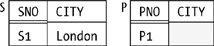

|
|
< Day Day Up > |
|
Why Nulls Are ProhibitedThe opening paragraph from the previous section applies equally well here (with just one tiny text substitution), so I'll basically just repeat it: There are numerous practical arguments in support of the position that nulls should be prohibited. Here I have room for just one—but I think it's a powerful one. But it does rely on certain notions I haven't discussed yet in this book, so I need to make a couple of preliminary assumptions:
Now I can present my argument. The fundamental point I want to make is that certain boolean expressions—and therefore certain queries—produce results that are correct according to three-valued logic but not correct in the real world. By way of example, consider the (nonrelational) database shown in Figure 3-2, in which "the CITY is null" for part P1. Note carefully that the empty space in that figure, in the place where the CITY value for part P1 ought to be, stands for nothing at all; conceptually, there's nothing—not even a string of blanks or an empty string—in that position (which means the "tuple" for part P1 isn't really a tuple, a point I'll come back to near the end of this section). Figure 3-2. A nonrelational database, with a nullConsider now the following (admittedly rather contrived) query on the database of Figure 3-2: "Get SNO-PNO pairs where either the supplier and part cities are different or the part city isn't Paris (or both)." Here's the obvious SQL formulation of this query:[*]
SELECT S.SNO, P.PNO
FROM S, P
WHERE S.CITY <> P.CITY
OR P.CITY <> 'Paris'Let's focus on the boolean expression in the WHERE clause (parentheses added for clarity):
( S.CITY <> P.CITY ) OR ( P.CITY <> 'Paris' )For the only data we have in the database, this expression evaluates to UNKNOWN OR UNKNOWN, which reduces to just UNKNOWN. Now, SQL queries retrieve data for which the expression in the WHERE clause evaluates to TRUE, not to FALSE and not to UNKNOWN; in the example, therefore, nothing is retrieved at all. But of course part P1 does have some corresponding city in the real world; in other words, "the null CITY" for part P1 does stand for some real value, say xyz. Obviously, either xyz is Paris or it isn't. If it is, then the expression:
( S.CITY <> P.CITY ) OR ( P.CITY <> 'Paris' )becomes (for the only data we have):
( 'London' <> 'Paris' ) OR ( 'Paris' <> 'Paris' )This expression evaluates to TRUE, because the first term evaluates to TRUE. Alternatively, if xyz isn't Paris, the expression becomes (again, for the only data we have):
( 'London' <> xyz ) OR ( xyz <> 'Paris' )This expression also evaluates to TRUE, because the second term evaluates to TRUE. Thus, the boolean expression is always TRUE in the real world, and the query should return the pair S1-P1, regardless of what real value the null stands for. In other words, the result that's correct according to the logic (that is, 3VL) and the result that's correct in the real world are different! By way of another example, consider the following query (I didn't lead with this example because it's even more contrived than the previous one, but in some ways it makes the point with still more force):
SELECT P.PNO
FROM P
WHERE P.CITY = P.CITYThe real-world answer here is obviously the set of part numbers currently appearing in P (in other words, the set containing just part number P1, given the sample data shown in Figurer 3-2). SQL, however, will return no part numbers at all. To sum up: if you have any nulls in your database, you're getting wrong answers to some of your queries. What's more, you have no way of knowing, in general, just which queries you're getting wrong answers to; all results become suspect. You can never trust the answers you get from a database with nulls. In my opinion, this state of affairs is a complete showstopper. As with the business of duplicates in the previous section, there's much more that could be said on this issue, but I just want to close with a review of the formal argument against nulls. Recall that, by definition, a null isn't a value. It follows that:[*]
The net is that if nulls are present, then we're certainly not talking about the relational model (I don't know what we are talking about, but it's not the relational model); the entire edifice crumbles, and all bets are off. |
|
|
< Day Day Up > |
|
 " (and I'll add for the record that the symbols "<=" and ">=" are SQL syntax for "
" (and I'll add for the record that the symbols "<=" and ">=" are SQL syntax for " " and "
" and " ", respectively, as you probably know).
", respectively, as you probably know).